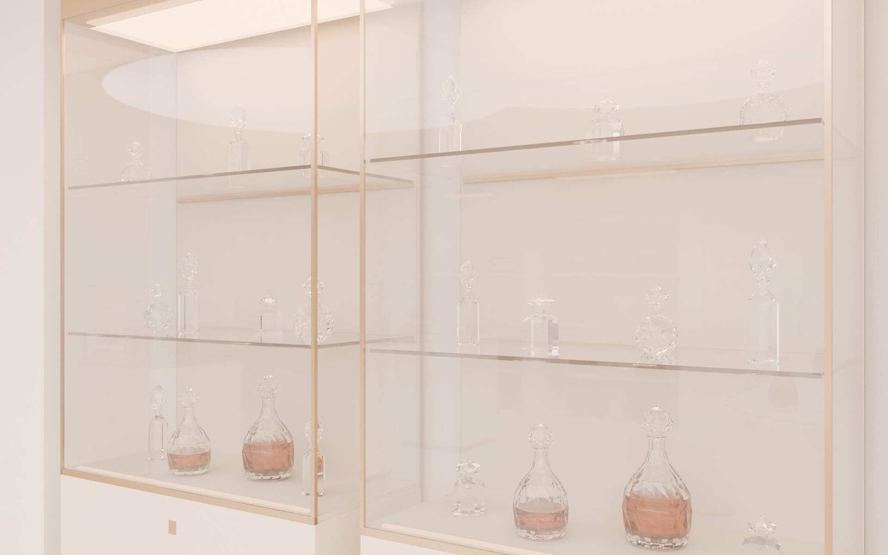
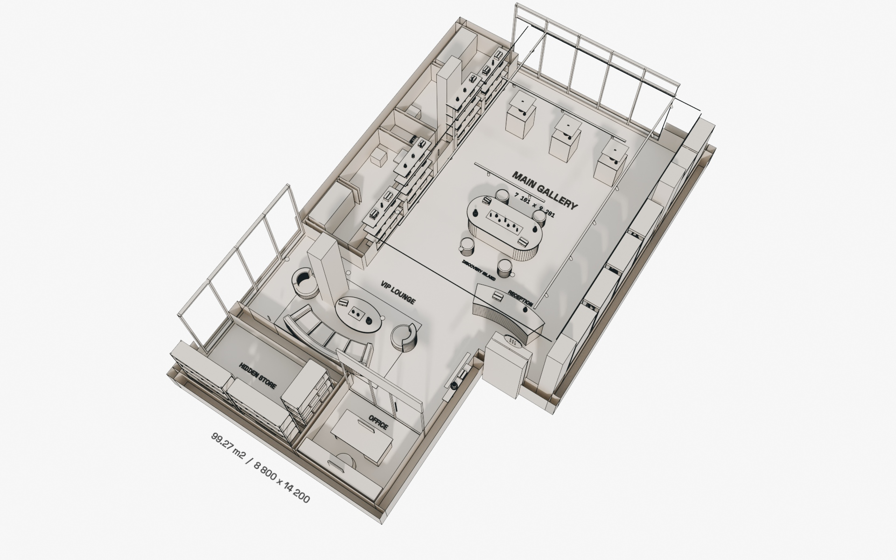

Native model / reproducible views
934 mesh objects · 47,124 evaluated vertices. Parametric objects, live Boolean openings, actual glass and procedural fabrics.
VIEW 01 and VIEW 02 are paired with clay + Freestyle views using identical camera matrices, lenses, shifts, pixel dimensions and evaluated mesh hashes. Glass stays transparent in the proof.
Camera-pair verification: 2 / 2. Evidence: exports/render_manifest.json. The cutaway is an architectural section of the perspective model.
Paint, light and display
Walls, four structural columns and ceiling: BM OC-17 White Dove #F3EFE6. Painted niches and fixture bases: BM OC-85 Pale Oak #E6DEC8. Both matte, roughness 0.85.
Broad neutral area lights, softened daylight and ceiling bounce keep the interior open and luminous. Modelled locks, low-iron glass and faceted crystal distinguish secure display from open product shelves.
Wood appears only in gift boxes and furniture. No stone, travertine, wood veneer or heavy panel wall finishes.
Editable handover / REV.03
| .BLEND | Perspective scene + CAD axonometric model |
| .DWG / .DXF | Native binary DWG; editable R2010 DXF dimensions |
| .JPG / .PDF | Six renders + four 3200 × 2400 boards + A3 PDF |
| .PY / .JSON | Build scripts, camera records, material audit, hashes |
99.27 sqm is the client's source label; CAD coordinate area excluding the service core is 98.43 sqm. CAD and detailed perspective layouts retain separate fit-out assumptions; same-camera proof applies to render pairs.
Client-supplied product references are separate from the design renders. Zero AI image generation in the submitted interior views. See docs/REV03.md for scope and rebuild commands.